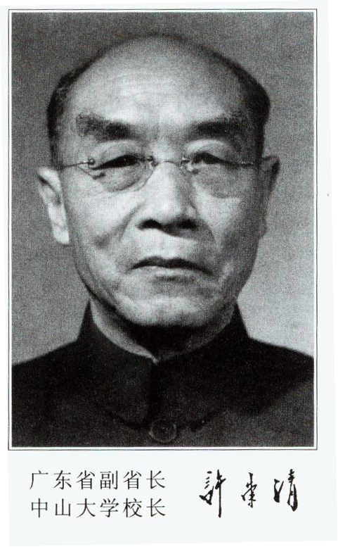

SYSU-RA-003 人物正文 / PROFILE
许崇清
1888 — 1969 · 广东广州 · 国立中山大学
许崇清是教育家、教育哲学家，三次出任中山大学校长，前后约二十年。抗战期间，他主持学校从云南澄江迁回粤北坪石，并聘来一批进步学者。
教育是促进人类发展的一种社会实践的形态。许崇清 · 论教育本质

SYSU-RA-003 人物正文 / PROFILE
1888 — 1969 · 广东广州 · 国立中山大学
许崇清是教育家、教育哲学家，三次出任中山大学校长，前后约二十年。抗战期间，他主持学校从云南澄江迁回粤北坪石，并聘来一批进步学者。
教育是促进人类发展的一种社会实践的形态。许崇清 · 论教育本质
抗日战争时期，中山大学从广州迁到云南澄江办学。1940 年 4 月，许崇清再任代理校长，主持把学校迁回广东乐昌坪石。小镇容不下一所大学，校舍只能分散在坪石及周边。
他提倡学术研究，聘来哲学家李达、经济学家王亚南、戏剧家洪深等进步学者。学校的民主和学术风气为之一变，也因此被国民党顽固派以“引用异党危害中大”为由免职，中共地下党曾领导师生开展“挽许拒张”运动。
1930 年代中期，主政广东的陈济棠崇尚复古读经，拟把《孝经》列为全省中小学必修科目，并交许崇清审查。此时他已卸任教育厅长，只任省政府委员。
他写了《孝经新诂教本审查意见书》予以否决。意见书在香港发表并传回广州后，文化教育界争相阅读，学生也不愿再上《孝经》课。广东当局撤去他的省政府委员职务。
许崇清早年留学日本东京帝国大学，在日加入同盟会，曾参与起草《中国国民党第一次全国代表大会宣言》的教育部分。1931 年 6 月至 1932 年 1 月，他首任国立中山大学代理校长，把文、法、理、农、医各科改为学院，并增设社会学系及土木、化学工程两系。
1951 年 2 月，他第三次出任中山大学校长，直至 1968 年。1951 年，他建议以 11 月 12 日孙中山诞辰为校庆日，获宋庆龄同意，这个日子沿用至今。
生于广东广州。
首任国立中山大学代理校长，推行学院制。
前后否决全省中小学必修《孝经》的方案。
再任代理校长，主持自云南澄江迁回坪石。
出任中山大学校长，建议以 11 月 12 日为校庆日。
逝世。掌校前后约二十年。